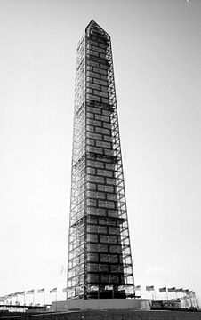
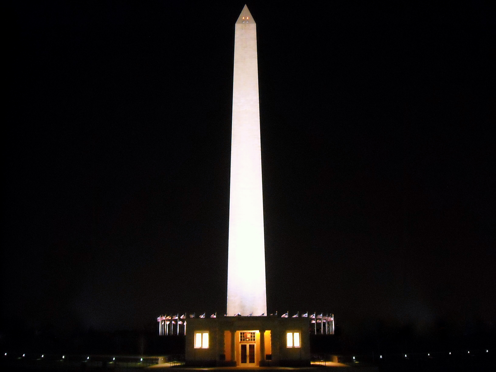
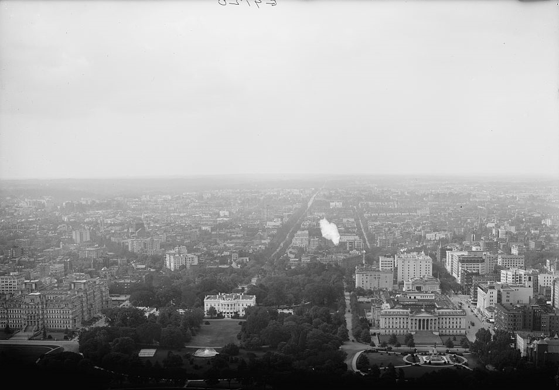

Travel Page
Washington Monument

Scenary
- Lincoln Memorial
- White House
- Capitol Hill
The Washington Monument is an obelisk on the National Mall in Washington, D.C., built to commemorate George Washington, a Founding Father of the United States, victorious commander-in-chief of the Continental Army from 1775 to 1783 in the American Revolutionary War, and the first President of the United States from 1789 to 1797.
Standing east of the Reflecting Pool and the Lincoln Memorial,[2] the monument, made of marble, granite, and bluestone gneiss,[3] is both the world's tallest predominantly stone structure and the world's tallest obelisk,[A] standing 554 feet 7+11⁄32 inches (169.046 m) tall, according to U.S. National Geodetic Survey measurements in 2013–2014.
Phtot Gallery
  Bangkok

Scenary
- Wat Arun
- Chao Phraya River
- Bangkok's skyline
Bangkok, Thailand’s capital, is a large city known for ornate shrines and vibrant street life. It is officially known in Thai as Krung Thep Maha Nakhon and colloquially as Krung Thep.
Bangkok welcomes more visitors than any other city in the world and it doesn’t take long to realize why. Bangkok is a city of contrasts with action at every turn. Marvel at the gleaming temples, catch a tuk tuk through bustling Chinatown or take a longtail boat through floating markets. Food is another Bangkok highlight, from local dishes served at humble street stalls to haute cuisine at romantic rooftop restaurants.
Photo Gallery


New York City

Scenary
- Times Square
- Central Park
- Empire State Building
New York City, often dubbed the "City that Never Sleeps," is a bustling metropolis like no other. Its iconic skyline, dominated by towering skyscrapers like the Empire State Building and One World Trade Center, symbolizes its ceaseless ambition and innovation. The city's cultural diversity is a defining feature, with neighborhoods like Chinatown, Little Italy, and Harlem offering a rich tapestry of traditions and flavors.
Beyond the surface, New York City's subway system and iconic yellow taxis make it remarkably accessible, allowing residents and visitors alike to explore its diverse offerings. This city is a stage for dreams to be pursued, a canvas for artistry to flourish, and a relentless engine of progress.
Photo Gallery